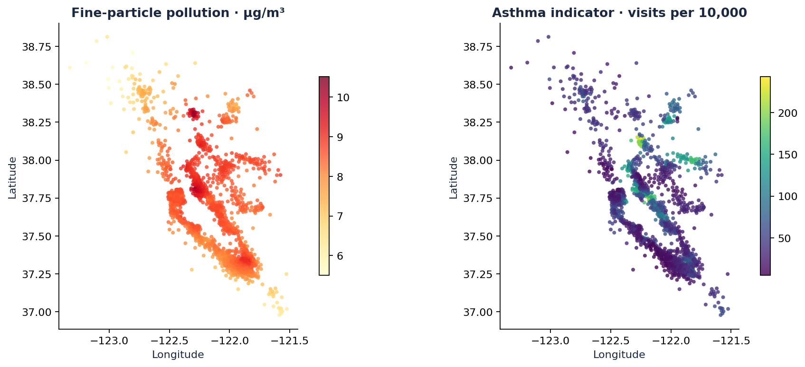
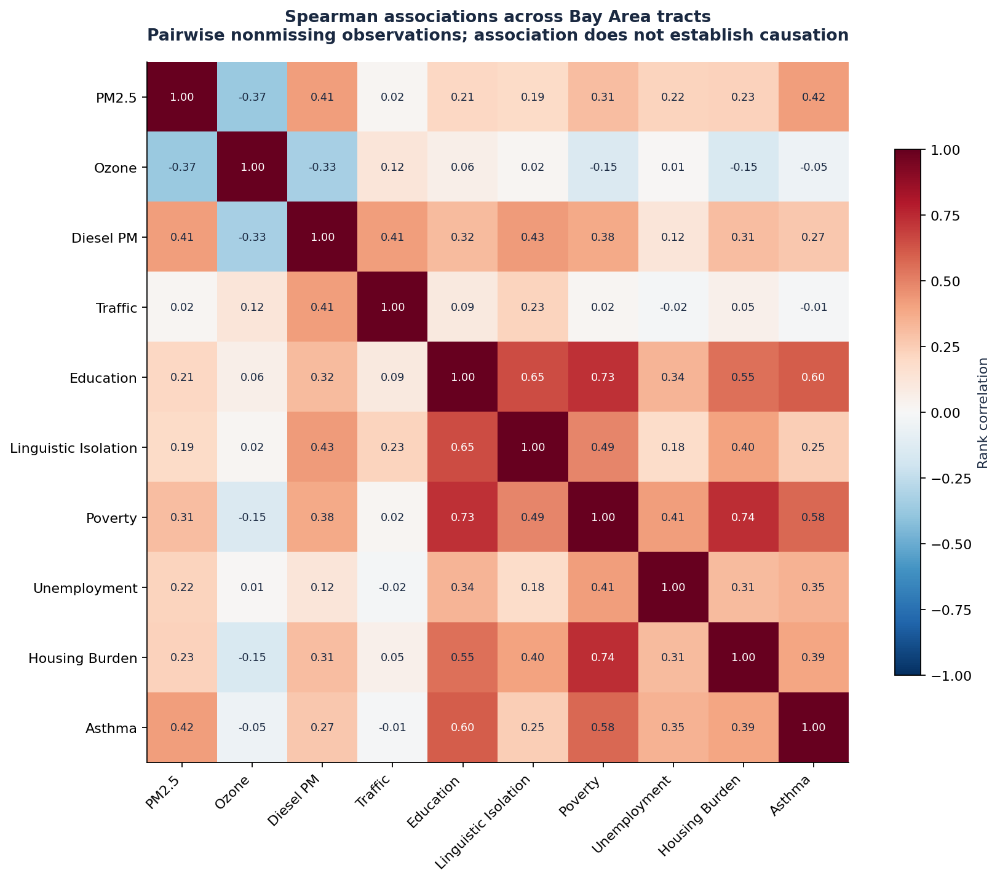
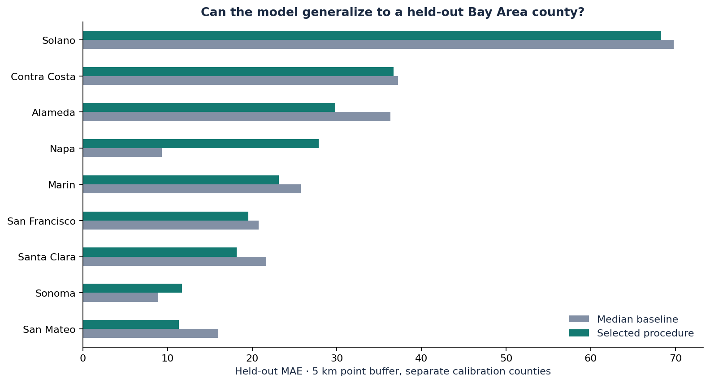
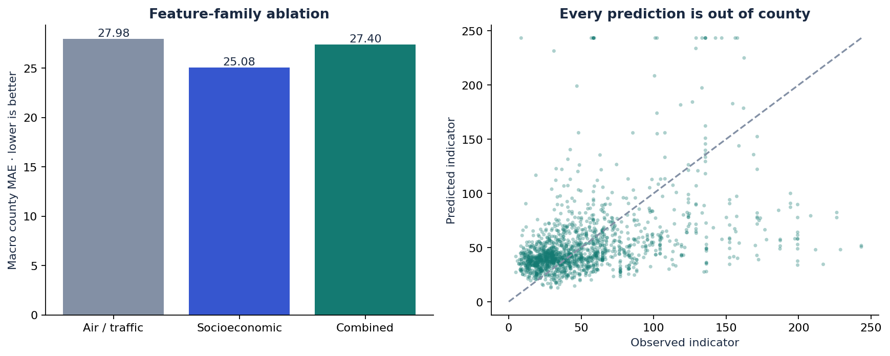
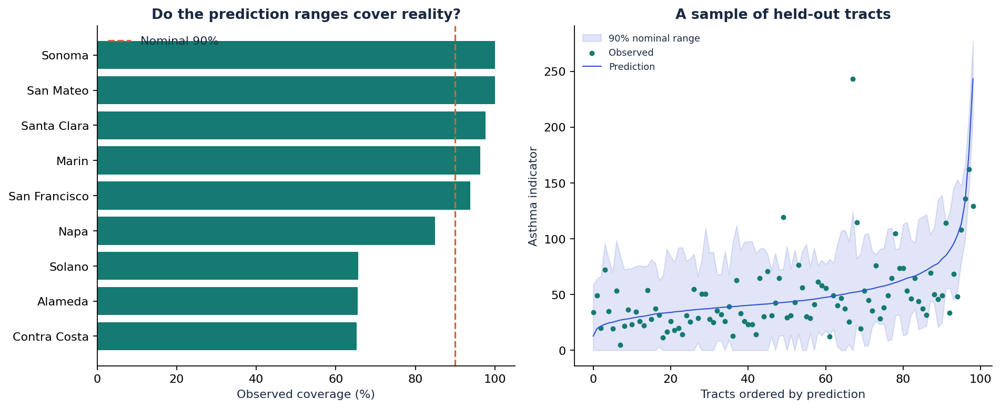
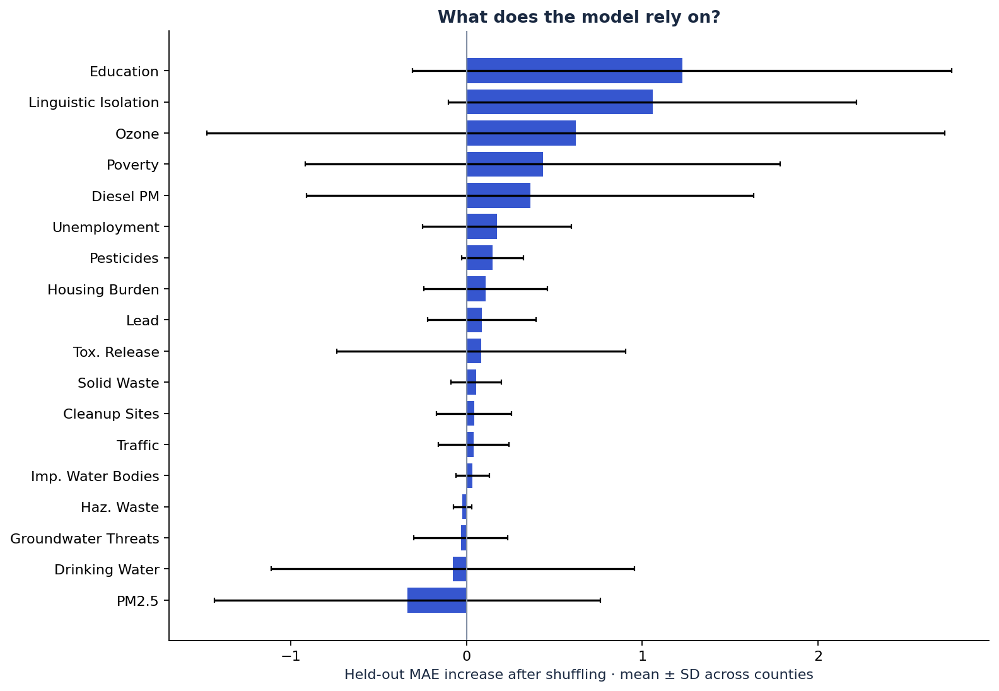
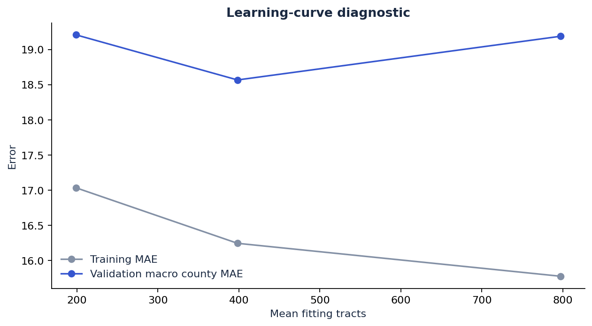
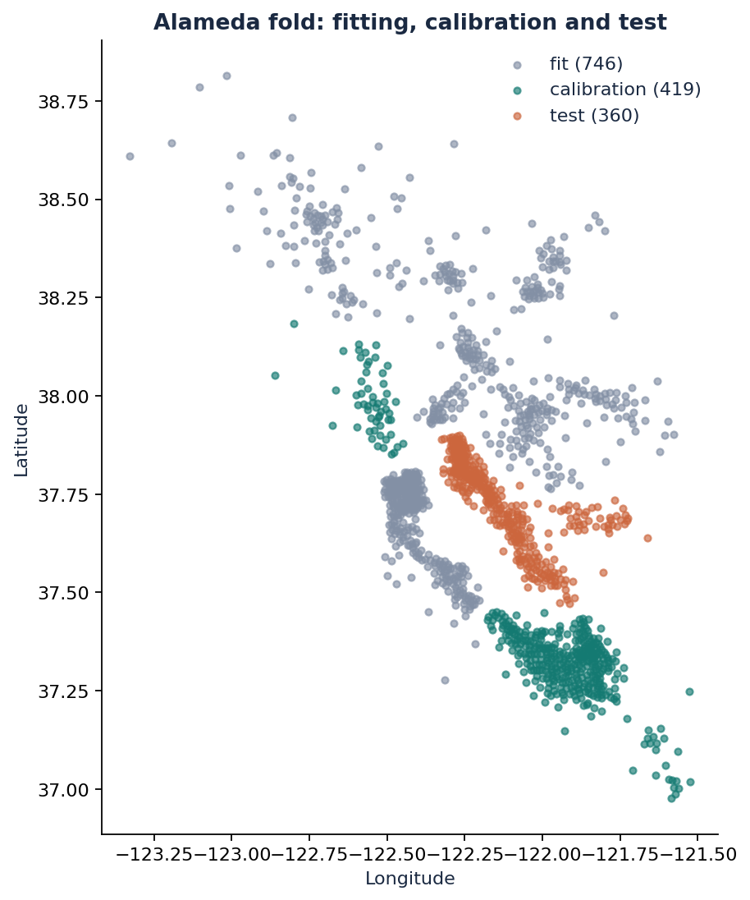

Where is pollution higher?
Where are asthma visits higher?
Compare historical Bay Area pollution and asthma emergency-visit indicators, then test whether machine learning can estimate the asthma indicator in a county it has never trained on.
9.04 µg/m³ mean PM2.5 across its tracts. Different pollutants have different county leaders.
106.0 age-adjusted visits per 10,000, averaged across tracts. This measures emergency visits, not the percentage of residents with asthma.
These are unweighted averages of tract-level indicators in a historical release. They are not official aggregated county rates or current measurements. One of the 1,581 tracts has no asthma label.
Compare the nine counties
| Rank | County | Mean indicator | Relative comparison | Tracts |
|---|
Location and association
Each dot represents a census tract centroid. Colors show the measurement in that tract; these are not continuous exposure surfaces.

How to read the correlation heatmap
Each square compares two measurements across tracts. Values near +1 mean they tend to increase together; values near −1 mean they tend to move in opposite directions. Values near zero show a weak monotonic relationship. We use Spearman rank correlation to reduce sensitivity to skewed measurement scales. Correlation does not establish that one variable causes the other.

Can it work in an unfamiliar county?
The model learns from some Bay Area counties and estimates the asthma indicator in a held-out county. All preprocessing and model selection happen without that test county. Separate counties calibrate prediction ranges.
Which information helps?
| Procedure | Macro county MAE ↓ | Pooled R² ↑ | Range coverage | Mean range width |
|---|
MAE is on the asthma indicator’s scale. The median baseline guesses the middle training value for every test tract. Inner grouped validation selects among the median, log-target Ridge, Extra Trees and histogram gradient boosting. County variation matters more than a single headline score.


A prediction should come with its limits
Ranges use residuals from reserved calibration counties. A nominal 90% range aims to cover most observations, but geographic shift and spatial dependence invalidate an automatic coverage guarantee. Compare that target with measured coverage in every county.

Inspect held-out tracts
Hover or tap near a point to inspect its prediction, range and observed indicator.
Predictive reliance

Shuffle one feature on the held-out county and measure the change in MAE. Correlated features can share or hide importance. Error bars show variation across counties, not causal effects or confidence intervals.
Where more work is needed

Hyperparameters were selected on these development data, so this curve is diagnostic. Additional files contain residuals, poverty slices, feature shift, a shuffled-label control and the original extrapolation failure.
Why keep the failed run?
The initial combined model’s macro MAE was 172.20 and one prediction exceeded 260,000 indicator units. The training-derived upper bound prevents that output failure. Keeping the original results and identifying the revision makes the limitations reviewable. Revised performance still requires new-data validation.
Every result has a trail
Official, pinned data
Source workbook and derived-data hashes, publisher dictionary, a Bay Area-only filter and a row-level comparison against the old draft extract.
Fit, calibrate, test
Whole-county splits and 5 km centroid buffers. Imputation, scaling, hyperparameter search and prediction bounds are fitted inside the relevant training partition.
Code to results
Python package and CLI, VS Code debug actions, notebook walkthrough, source-checkout launcher, tests, CI and auditable predictions and split manifests.

From the repository root: python run_bayair.py train. This file works offline after training; no server, map token, API key or external script is required.